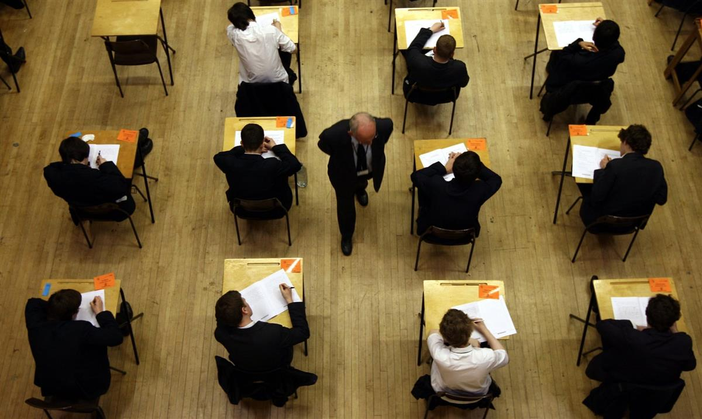

‘There should be a place for the arts in all schools.’ Students at the In Harmony school in West Everton, Liverpool. Photograph: Antonio Zazueta Olmos/Antonio Olmos
Sun 1 Sep 2019 17.11 BST Last modified on Sun 1 Sep 2019 18.50 BST
The popularity of subjects such as English literature has fallen dramatically. As a new school year begins, it’s time for a rethink
A new school year is about to begin. This means that I might soon arrive at a school and do a poetry workshop with some younger teenagers. It could well go like this. They make it clear that they don’t like poetry. I tell them poetry comes in hundreds of different shapes, sizes, rhythms and moods; one way we can make poems is in a group and without writing anything down. For example, the people who are in charge of us in life have ways of showing they are fed up with us, angry with us, or through which they try to control us; punish us, even. What do such people say? I suggest they go into pairs and say these kinds of things to each other – in role, as parents, teachers, carers. We select the best lines. Then I say, can we create this into a scene? They suggest that all the lines should be said to just one of them sitting in a chair; the rest stand in a semicircle around him, and as they each say their line they point at the boy in the chair and then step back, while the semicircle repeats a chosen chorus.
We have made a snapshot of one aspect of their lives. It has rhythm, structure, solo and chorus, movement and mimesis. Later they can perform it for others, write a transcript of it and “publish” it on a school blog. We can talk about what we have made: what worked? Was it like any other poems or plays?
This is the arts in action. There should be a place for it in all schools, but it is becoming desperately difficult to find the time, staffing or resources to make it happen.
Why? Because school means choices, and there are competing ideas about what school is for. The position firmly in place now in England, thanks largely to the influence of Michael Gove during his time as education secretary, is that our schools should focus their attention on producing units of sellable labour power (school leavers), and these units should be seen as being more or less able to compete in what ministers call the global labour market; there is an agreed amount of knowledge that needs to be transferred from teachers to pupils so that they can become these competitive units. Capacity to compete has to be measured by putting in place tests at key moments throughout a person’s school life so that by the end, school will disgorge a graded set of units – some of whom have this knowledge, and about a third of whom do not.
One of the saddest consequences of this narrow approach to education is a decline in school students doing subjects with an arts dimension. (I hesitate to use the word “creative” because in ideal circumstances any subject can be creative.) This year, 3,500 fewer students sat English literature A-level compared to last year; over the past four years, music GCSE takeup has fallen by 17% and there has been a sharp drop in takeup of drama courses. One reason for this is that schools are judged on their success in getting students to achieve success at Ebacc – a raft of five GCSEs, which exclude arts subjects – and all subjects have been overloaded with requirements to memorise more. In English literature this has led to a demand that all students learn quotes and chunks of contextual knowledge. Well, say cynics like me, it makes it easier for examiners to find the requisite number of failures: the ones who can’t reproduce this stuff on the day. It also guarantees humiliation.

‘Schools are judged on their success in getting students to achieve success at Ebacc.’ Students sit a GCSE exam. Photograph: David Jones/PAThere is another way. The world is becoming increasingly changeable and unpredictable, so why should education make the knowledge being passed on so finite and certain; why divide all of it into measurable units? And why ask education to jump to the economic system’s demands and solve its woes? Doesn’t the new world of climate change, automation, fake news and global digital communication make it necessary for young people to be more flexible, interpretive, critical and creative? Why has so much been added to the curriculum, with the consequence that the GCSE course in many schools has lengthened to three years plus much more homework, reducing time for the arts and cutting down on scope for teachers to devise courses and materials away from what’s required in national exams? There should be room in education for schooling to be more responsive to events, more focused on varying interpretations and more able to create artistic and technological responses to the world as it changes. There should be more time both in and outside of lessons for students to follow personal and cultural interests.
All this requires the delivery of knowledge – plenty of it – but in ways that ask students to do things with that knowledge rather than to just absorb it. Some of this knowledge may be difficult or even impossible to measure, but so be it.
The arts investigate the properties of the world by playing with materials – such as stone, paint, fabric, synthetic substances, the human body, the human voice and of course language. They investigate the mind’s responses to the material world and to other people, past and present, and to how we organise ourselves into societies, institutions and groups. The arts always involve change and transformation. In the process of making something – a dance, a film, a song, a textile design, whatever – we change “stuff” in order to create something new. In changing stuff, we change ourselves.
This is fun. It’s absorbing. It’s emotional. It touches us and moves us. It’s social: in doing the arts we find out what we need from each other. But it’s also about survival – surviving as individuals, as groups, but also as the human race. It may not be a sufficient means to keep barbarism and despoliation of the planet at bay, but I believe it is a necessary condition for this, because the arts keep coming back to the question: what is the “us-ness” of us? It’s about time the arts had a guaranteed place in schools and the way they enhance students’ lives was properly recognised.
• Michael Rosen is a writer and broadcaster, and a former children’s laureate
SOURCE: THE GUARDIAN